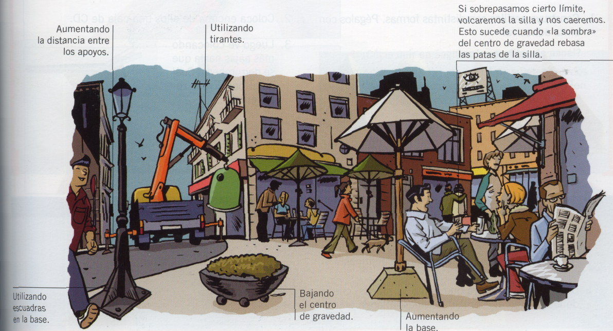
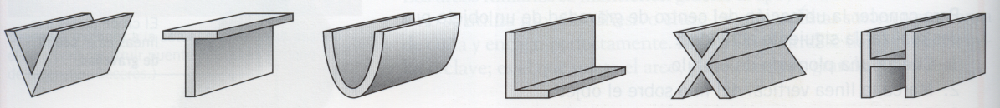
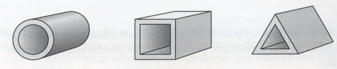
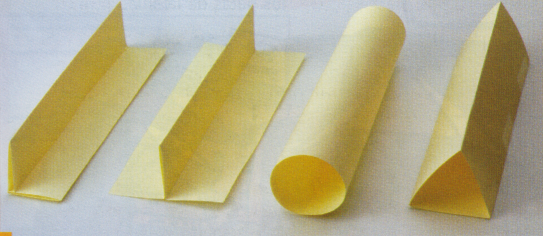
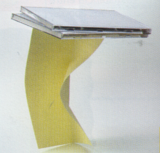

Estructuras estables
Son estructuras estables aquellas que, al aplicar una fuerza sobre ellas, conservan su posición. Son inestables las estructuras que, al aplicar un pequeño empuje, pierden el equilibrio.
La estabilidad está relacionada con el centro de gravedad. El centro de gravedad es un punto imaginario donde estaría toda la masa del objeto si se pudiera comprimir. Cuando este punto se sitúa fuera de la base del objeto, entonces éste se convierte en inestable y se vuelca.
PIENSA
En la siguiente ilustración se describen algunos recursos para mejorar la estabilidad de una estructura; pero seguro que puedes encontrar más, señálalos:

Perfiles
Otro recurso muy utilizado a la hora de realizar estructuras son los perfiles, que son barras de diferentes secciones.
Muchos de los elementos estructurales que hemos estudiado (sobre todo las vigas y los pilares) están fabricados con perfiles metálicos (por ejemplo: de acero, aluminio...). Si tuviéramos que hacer vigas y columnas macizas, pesarían tanto y serían tan caras que no podríamos fabricar grandes estructuras.
Los perfiles nos permiten hacer las estructuras resistentes, ligeras y baratas al mismo tiempo.
- Abiertos: con forma de V, T, U, L, X, H.

- Cerrados: con forma de círculo, cuadrado o triángulo.

EXPERIMENTA
- Construye perfiles con distintas formas. Pégalos con cinta adhesiva.

-
Coloca encima de ellos una carga (por ejemplo: una caja de CD). 
-
Luego ve colocando más cajas hasta que se derrumben. ¿Cuál es el perfil más resistente? ¿Y el menos resistente?
-
El perfil L es el menos resistente.